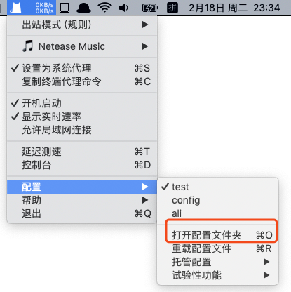
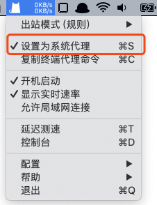
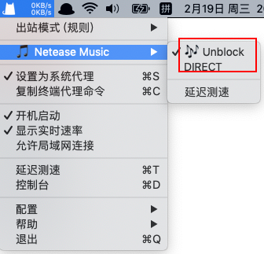

Mac下clash教程
问题
在Mac下想要舒服的使用UnblockNeteaseMusic肯定要和clashx配合使用，我在使用clashx时遇到了一些问题，现在记录下来方便大家参考
简单使用
-
clashx的配置文件夹路径在
~/.config/clash/下，或者直接在状态栏通过gui操作

- 配置文件都是以yaml类型的。在配置文件夹下可以存在多个配置文件，方便在界面上切换不同的配置，如上图的三个配置文件
test，config，ali - 只有在
设置为系统代理的情况下才能使代理有效

我使用到的配置
详细的配置文档可以参考这个链接，下面说的都是我经常用到的
Proxy字段
proxy字段接受对象数组，该字段用来制定代理服务器的描述，比如代理服务器的类型，ip地址，端口等
Proxy:
- name: "Unblock"
type: ss
server: music.desperadoj.com
port: 30001
cipher: aes-128-gcm
password: desperadoj.com
- name: "http_proxy"
type: http
server: 111.168.1.1
port: 1111
上面就声明了两个代理，在后面的字段中使用
Proxy Group字段
该字段在有多个代理源的情况下，根据策略不同选择不用的代理源
策略有以下几种：
url-test可以自动选择与指定 URL 测速后，延迟最短的服务器allback可以尽量按照用户书写的服务器顺序，在确保服务器可用的情况下，自动选择服务器load-balance可以使相同 eTLD 请求在同一条代理线路上select用来允许用户手动选择 代理服务器 或 服务器组
下面的事例是select类型的策略
Proxy Group:
- name: "🎵 Netease Music"
type: select
proxies:
- 🎶 Unblock
- DIRECT
上面的配置里我指定了两个代理源，在gui里的反馈就是这样的：

这种策略方便我们手动的切换
Rule字段
该字段也是数组，数组的item是字符串
该字符串由逗号分隔,具体的规则是：匹配规则,匹配源,使用哪个代理
Rule:
# domain类型是全匹配，只有访问的url是apps.apple.com时，才是使用名为“🎵 Netease Music”的代理
- DOMAIN,apps.apple.com,🎵 Netease Music
#DOMAIN-SUFFIX是后缀域名匹配,例如这个规则可以匹配blog.126.com这个url，之后使用"direct"这个代理
- DOMAIN-SUFFIX,126.com,DIRECT
#domain-keyword是关键词匹配
- DOMAIN-KEYWORD,baidu,DIRECT
#ip匹配
- IP-CIDR,127.0.0.0/8,DIRECT
参考
- 原文作者：Noel
- 原文链接：https://blog.mcjy.top/post/2020.2.18_mac%E4%B8%8Bclash%E6%95%99%E7%A8%8B/
- 版权声明：本作品采用知识共享署名-非商业性使用-禁止演绎 4.0 国际许可协议进行许可，非商业转载请注明出处（作者，原文链接），商业转载请联系作者获得授权。